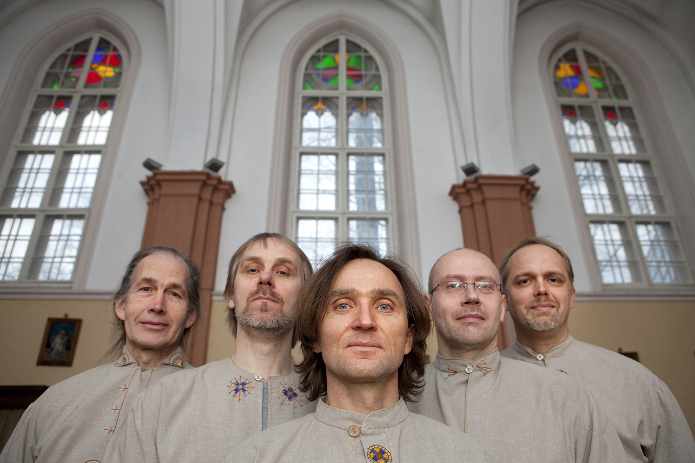

Ansambel Triskele is a vital folk music group from Estonia – five men who share deep interest in folk hymns, early music and ancient rune singing. Since 1997 the group has released seven albums: in addition to Estonian folk hymns Ansambel Triskele has been inspired by the rich heritage of age-old folksongs and the music of European middle ages.
In its compositions Ansambel Triskele has brought together different singing styles and a variety of musical instruments representing both Estonian traditional music (zithers, mandola, bagpipes, jaw harp) and European early music (lute, oud, flutes, frame drum, bells). The factor unifying the members of Ansambel Triskele is their keen interest in a variety of music traditions from all over the world, the influences of which can be found in the group’s performing style.
Members of Ansambel Triskele have participated in several Estonian early and folk music groups as well as international co-operation projects. The group’s lute and zither player Toivo Sõmer is an accomplished jazz performer; the flutist Heikki-Rein Veromann is an experienced folk singer and actor; percussionist Janno Mäe is recognised as an expert on traditional percussion instruments; singer Tarmo Tabas has long-term experience performing Gregorian chant in Tartu Catholic Church; and second singer Ergo-Hart Västrik teaches folklore at the University of Tartu.
Tarmo Tabas - vocals
Ergo-Hart Västrik - vocals
Heikki-Rein Veromann - flutes, bagpipes, jew's harp, vocals
Toivo Sõmer - lute, oud, mandola, zithers, vocals
Janno Mäe - percussion, bells, zither, vocals
Jaanus Roosileht – fiddle, rebec, bowed harp, vocals (until 2010)
Ansambel Triskele has performed on a variety of folk and early music festivals such as:
• Montalbâne Festival of Medieval Music, Freyburg/Unstrut, Germany
• St Wenceslas Music Festival, Prague, Czech Republic
• Sommelo Ethno Music Festival, Kuhmo, Finland
• Skamba Skamba Kankliai International Folklore Festival, Vilnius, Lithuania
• Baltica International Folklore Festival, Tallinn, Estonia
• Viljandi Folk Music Festival, Viljandi, Estonia
• Tartu International Early Music Festival, Tartu, Estonia
Most probably, the symbolic image of triskele or triskelion – three legs running, united at the centre like the spokes in a wheel – reached northern Europe in the late Bronze Age. The image was held to possess protective magical qualities and was used to symbolise the Sun, the Moon, and movement and progress in general. Although associated with the chief Scandinavian god Odin during the Viking period, the symbol was also widely used in Christian iconography and symbolism, primarily as a reference to the Holy Trinity. In Estonia, the triskele symbol was introduced through different cultures and thus captures the semantic fields of various eras. Similarly, one can find references to different layers in Estonian folk music in the works of Ansambel Triskele – there are traces of archaic folk song, the polyphonic traditions of south Estonia, and folk hymn singing.
Maa ja meri kiidavad (Kärla) listen
Armas Jeesus, rõõmustaja (Reigi) listen
Su hooleks ennast annan ma (Mustjala) listen
Nuta inimene (Kärla) listen
Eks see ole arm ja heldus (Käina)
Su nimel lähen nüüd (Kaarma) listen
Jeesus, rõõmustaja (Pühalepa)
Nüüd on see päev ju lõppenud (Käina)
Maa ja meri kiidavad (Kärla) + Armas Jeesus, avita (Haapsalu)
Oh Kristus! Lunastaja listen
Ma tulen, armas Jumal, nüüd
Oh Jumal Looja, püha Vaim
See jõulupäev on rõõmust suur
Oh leinakem! Ja kaebakem
Oh laulgem südamest
Nüüd paistab meile kauniste listen
Nüüd hingvad inimesed listen
Kui Jeesust risti naelati
Kõigis paigus, kus ma seisan listen
Kolga-Jaani kiriku kellad
See aeg on tõest ukse ees
Kristus, kes meid õndsaks teed listen
Kes Jumalat nii laseb teha
Ma armastan, oh Issand sind
Üks laps on sündind Petlemmas listen
Armas Jeesus, sind ma palun listen
Oh, võta, armas Jeesus, vastu mult
Õnnis, kes ei võta teha
Mu süda, miks sa muretsed
Au, kiitus olgu igavest
Nüüd olgu ikes igävest' (Kolga-Jaani)
Latse võtke rõõmsast kuulda + Omme latsi, Issand, toida (Urvaste)
Ma su pool', Jesus, tänita (Halliste) listen
Õnn selle elomajale (Halliste) listen
Oh pää, täüs verd nink jooni (Halliste)
Üts õige õnnis mees om see (Otepää) listen
Issand ärä nuhelgu (Halliste)
Võimust võtnu om nüüd meie voon (Otepää)
Öö om jo läve een (Otepää)
Oh kuis õndsa omma pühä taivan (Nõo) listen
Meil, Esä, vaimu lähätä (Halliste) listen
Kui meil om suuremb hädä käen (Kolga-Jaani) listen
Nätse Jumal, siin ma rummal (Räpina) listen
Mu looja nink mu elovürst (Otepää) listen
Mu Jesus võtap patatsit (Räpina)
Mu armas, kae usinast (Halliste)
Mu süda, ärka üles (Reigi) listen
Ma tänan sind, et oled mind (Pärnu-Jaagupi)
Et kiitke Jumalat (Reigi) listen
Kõik inglid taeva valguses (Suur-Pakri)
Kristus surmast tõusnud on (Kihnu)
Kuis pean vastu võtma (Kihnu) listen
Ma kiitlen ükspäinis (Pärnu-Jaagupi)
Oh kui õndsad on need pühad taevas (unknown) listen
Kõigis paigus, kus ma seisan (Ridala)
Ansambel Triskele has interpreted in its programmes mainly rich heritage of Estonian folk hymns. These pieces have been combined with ancient ronosongs and with early music from Europe.
Runosong is the most archaic form of Estonian poetic and musical heritage and is the historical way of singing among the peoples at the Gulf of Finland. Scholars consider this poetic form to date back a few thousand years, while some texts are believed to originate from the beginning of the last millennium, based on their content. In this original poetic and musical language people created songs that embraced the whole lifespan and worldview of Estonian peasants, accompanying them from cradle to grave. Runosong defined or complimented the ritual activities of individuals and of whole village communities. Singing formed an important component of work and leisure and was part of all kinds of festivity. The program consists of Estonian runosongs accompanied by folk instruments.
Sample tracks
Saja, saja, vihmakene / Pour Down, Oh Rain listen
Koes, koes, lätsi / Where, Oh Where Did You Go listen
Elistvere poisid / Boys from Elistvere listen
Islands are special places where land and sea are tightly interwoven. On the one hand, the sea separates islands from other lands, and island life is therefore characterised by a sense of being apart. On the other hand, the sea makes islands more open to outside influence, offering easier opportunities to go abroad to discover new things. Currents of influence from far and near come together in island culture and are articulated in ways specific each place. The program consists of folk hymns recorded on Estonia’s biggest islands Saaremaa and Hiiumaa.
Sample tracks
Maa ja meri kiidavad / Earth and Sea Rejoice listen
Armas Jeesus, rõõmustaja / Dear Jesus, Bringer of Joy listen
Su nimel lähen nüüd listen
Melodies of Estonian folk hymns were written down in the early 20th century in various places all over Estonia where the old-style tradition of folk hymn singing was still alive. The best known region for this tradition is western Estonia and the islands, close to the historical territory of the Estonian Swedes. However, the local hymn singing tradition was also known in the southern part of the country and this has been the main source of inspiration for Ansambel Triskele. The tradition of singing hymns ‘with ornaments’ evidently belongs to the 17th and 18th centuries and characterises the period prior to the usage of organs in Estonian parish churches. At that time Lutheran hymns – the texts of which were translated from German – were sung in churches under the guidance of lead singers. It was also during this period that melodies came to have their own lives and began to be disseminated as folk tunes.
Sample tracks
Nüüd olgu ikes igävest' / Let’s Now Forever And Again listen
Üts õige õnnis mees om see / A Just and Blessed Man Is He listen
Mu looja nink mu elovürst listen
Ethnomusicologist Helen Kõmmus has described this program as following: “Human beings live as long as they breathe, move and grow. The same is true of traditional songs created and lovingly learned by generations of musicians. As long as the songs are recreated, they exist and have life. Ansambel Triskele has found these seeds of folk hymns sung with rustic earnestness and dignified modesty and nurtured them until they became bright and cheerful hymns. A listener used to simple monophonic archive recordings might be surprised at the abundance of different layers and styles, instruments and human voices in this music. Bright and lively changes in tempo stimulate the senses. Meditative strings and flutes add space and freshness to the tunes. Masculine polyphony gives an entirely new dimension to these hymns. Creative breathing – this could be the best description of folk hymn interpretations by Ansambel Triskele.” The program contains folk hymns recorded by Cyrillius Kreek from western Estonia in 1921.
Sample tracks
Kui Jeesust risti naelati / Our Blessed Saviour Seven Times Spoke listen
Kõigis paigus, kus ma seisan / Everywhere I Ever Stand listen
At the beginning of the 18th century the Moravian Brethren spread through many parts of Estonia. In its popular forms great attention was paid to sincere and ecstatic religious feelings. A central place in the Bretheren’s liturgical practices was occupied by Singstunden, which were very warmly accepted among the country people. There is evidence that singing was accompanied with instruments (flute, zither).
Initially the lyrics and melodies of these songs were transmitted orally; in the middle of the 18th century the first Estonian Brethren hymnals and chorale books were complied. Ansambel Triskele’s program is based on one of the oldest Moravian Brethren hymnals in Estonian, titled Mönne illusa vaimolikko laulo (1759), as well as the Estonian Brethren’s manuscript hymnals available at the Estonian Literary Museum.
Sample track
Mes hirmu võib mul surm siin tetä / Death Cannot Cause Me Any Fear listen
This program is based on the manuscript choral book of the organist Gustav Swahn from Helme parish church dating back to 1774. This collection of hymns, the oldest known in the Baltics, offers a great joy of exploration as its arrangements take into consideration the previous manner of singing, which allowed free decorations and variation. Ansambel Triskele adds folk instruments, in some case trying to guess the how these hymns sounded 230 years ago.
The program is a musical journey from the coast of the Mediterranean to the Baltics. It combines songs and instrumental pieces from Catalonia, Italy, France, Bohemia, Finland and Estonia. Estonia is linked through the traditions of sacred music with European cultural heritage manifested in, for example, the rich folk hymn tradition.
Sample tracks
Genitricem Dei listen
La Tierche Estampie Royale + De moi doleros vos chant listen
The programs can be mixed and some new pieces, or pieces from other programs, can be added to existing programs. All programs combine a capella pieces and pieces accompanied with instruments.
| 1ST DECEMBER 3PM |
Folk Hymns and Songs from G. Swahn's Collection Advent Concert of Peipsiääre Municipality in Alatskivi Castle |
|
|---|---|---|
| 15TH DECEMBER 2PM |
Hail To The Day! So Rich In Joy: Folk Hymns and Songs from G. Swahn's Collection Concert within the EBU Christmas Music Day programme in Tartu St Paul's Church |
10.01.2019 9AM Tartu, Mileedi Flower and Interior Centre, 9th South-Estonian Prayer Breakfast
27.03.2019 7PM Pärnu Concert Hall (Chamber Hall)), Earth and Sea Rejoice: Folk Hymns from Estonian Islands and South-Estonia
29.03.2019 7PM Tallinn, Erinevate Tubade Klubi (Telliskivi Creative City) TMW2019 Fenno-Ugria Night
01.04.2019 9.30AM, 11.15AM School Concerts in Pala and Alatskivi
25.06.2019 3.15PM University of Tartu Fetstive Hall, Opening Ceremony of the EASR 2019 Tartu Conference
XIX Pärnu Hanseatic Days
28.06.2019 at 12.30PM and 3PM concert "Journey Through Medieval Music"
Estonian Folk Hymns and Songs of Moravian Bretheren
28.06.2019 at 7PM Paistu St. Mary's Church, Viljandi County concert "Earth and Sea Rejoice"
Rapla Church Music Festival
12.07.2019 at 7PM Velise Orthodox Church concert "Earth and Sea Rejoice"
Juuru Organ Festival
12.07.2019 at 10PM Juuru St Michael's Church concert "Earth and Sea Rejoice"
Liivimaa Maapäev
13.07.2019 at 8PM Valga Säde Park concert "Journey Through Medieval Music"
All Souls' Day Evening Concert
2.11.2019 at 7PM Tartu St Peter's Church
09.01.2018 in Tartu St. John's Church
Valga-Valka Summer Music Festival of Seven Churches
14.07.2018 at 5PM St. Isidore’s Apostolic Orthodox Church of Valga concert "Earth and Sea Rejoice"
Theatrical performance "ELOKÄÜK"
Last three weekends of august at 7PM Hageri Prayer House
15.09.2018 5PM Peipsiääre Municipality, Turgi Handicraft Cottage
"Eras of Estonia: The Swedish Era"
20.09.2018 7PM Tallinn, Great Guild Hall (Folk Hymns of Estonian Swedes and Islands)
23.09.2018 4PM St. Petersburg, St John's Church
Usedomer Musik Festival
03.10.2018 7PM Morgenitz Evangelical Church "Earth and Sea Rejoice"
04.10.2018 7PM Berlin, St.-Matthäus-Kirche (Tiergarten)
12.10.2018 7PM Tallinn, private event
25.10.2018 8PM Tartu, Genialistide klubi, "Estonian Folk Hymns and Runosongs"
01.11.2018 7PM Tartu St Peter's Church, All Souls' Day Evening Concert
28.12.2018 11AM Saue Concert Hall, Christmas and New Year Concert
Tallinn Medieval Days
07.07.2017 at 7PM Tallinn St. Catherine's Church "The Purity and the Cleansing of the Soul"
Tartu Hanseatic Days
09.07.2017 at 1.15PM and 2.15PM Tartu St. John's Church tower
30.10.2017 at 4PM Viljandi St. John's Church
02.11.2017 at 7PM Tartu St. Peter's Church
24.11.2017 at 6.30PM in Lüneburg Monastery Church
25.11.2017 at 6PM in Berlin Immanuelkirche
Kuressaare Castle Days
09.07.2016 at 9PM in Kuressaare Castle Capitulary Hall
10.07.2016 at 12PM in Pärnu-Jaagupi St Jacob's Church (during the service)
17.07.2016 at 11AM in Haapsalu Tookirik (during the service)
Hiiumaa Folk Music Festival
17.07.2016 at 8PM in Pühalepa Church
29.07.2016 at 3PM in Vormsi St Olaf's Church (St Olaf's Day celebrations)
29.07.2016 at 8PM in Jõelähtme Church
Festival Regiöö
24.09.2016 at 6PM in Tartu St John's Church
22.12.2016 at 8PM in Sisevete saatkond (Tartu Folk Music Club)
30.05.2015 at 5PM Tartu Catholic Church (during the wedding mass)
03.06.2015 at 8PM Tartu University History Museum
Festival Regiöö
27.09.2015 at 12.30PM programme "Arm tuli taevast" together with ensemble "Tuli Taevast" in Tartu St John's Church
Tartu Hanseatic Days
13.07.2014 at 1PM St Anthony's yard
27.09.2014 at 4PM in Helme Church
31.05.2013 at 8PM Võru St Catherine's Church (Uma Pido 2013)
Montalbane festival
16.06.2012 at 7PM in "Hyperborea -- Die Musik der Nordländer" in Freyburg Stadtkirche St. Marien, Germany
17.06.2012 at 10PM in within Sunday mass in Freyburg Stadtkirche St. Marien, Germany
Tower Music Concerts
26.06.2012 at 9PM in Tartu St. John's Church
Sommelo Festival
29.06.2012 at 5PM Kuhmo Church, Finland
Viljandi Folk Music Festival
26.07.2012 at 8PM Estonian Traditional Music Centre
28.07.2012 at 2PM Culture House Yard
Vastseliina Medieval Day
28.07.2012 at 9.30PM Vastseliina Bishop's Castle
18.08.2012 at 4PM in Assikvere Village Day in Assikvere
20.05.2011 Festival Regiöö
21.05.2011 Festival Regiöö with Miriam Andersen
22.06.2011 Ridala Church
23.07.2011 Tartu Hanseatic Days
28.07.2011 Viljandi Folk Music Festival
30.07.2011 Viljandi Folk Music Festival
07.08.2011 Paldiski Church
24.09.2011 Juhan Liiv Memorial Museum (Folksongs from Kodavere)
30.09.2011 Ostrova, Czech Republic
01.10.2011 Dobřichovice, Czech Republic
02.10.2011 St. Wenceslas Festivities in Prague (To the Roots)
30.10.2011 Estonian National Museum (Folksongs from Kodavere)
7.08.2010 at 6PM in Juhan Liiv Memorial Museum (Folksongs from Kodavere)
12.08.2010 at 6PM in Nõo St Laurentius Church
Christmas Concert
26.12.2009 at 12AM in Jõelähtme Church
15.-19.10.2009 Concerts in Czech Republic
Viljandi Folk Music Festival
24.07.2009 at 7PM in Viljandi St. John's Church
25.07.2009 at 3PM in Viljandi St. John's Church
Summer programme of Eesti Kontsert
15.08.2008 at 7PM in Tallinn St. Nicholas' (Niguliste) Church
16.08.2008 at 8PM in Tartu on St. Anthony's Court
Viljandi Folk Music Festival
26.07.2008 at 3PM in Viljandi St. John's Church
Hiiu Folk Music Festival
20.07.2008 at 12AM in Pühalepa Church
20.07.2008 at 7PM in Emmaste Church
Tartu Hanseatic Days
18.07.2008 at 11PM in Tartu St. John's Church
Days of Karksi Castle
13.07.2008 at 11AM in Karksi Sts. Peter's and Paul's Church
Series "The Voice of the Future Museum"
16.12.2007 at 3PM at the Exhibition Hall of the Estonian National Museum
Tour in Czech Republic
10.08.2007 in Dobřichovice St. Judas Thadeus Chapel (Festival Musica Viva 2007)
12.08.2007 in Lomnice nad Popelkou, Church at Tabor Hill
13.08.2007 in Prague, National Museum
14.08.2007 in Kraliky Chapel
Viljandi Folk Music Festival
26.07.2007 in Suure-Jaani Church
28.07.2007 in Viljandi St. John's Church
+372 5567 1134 | +372 5559 0468
ansambel.triskele@gmail.com
Siiri Siimer
+372 501 8971
siiri@sircorp.ee